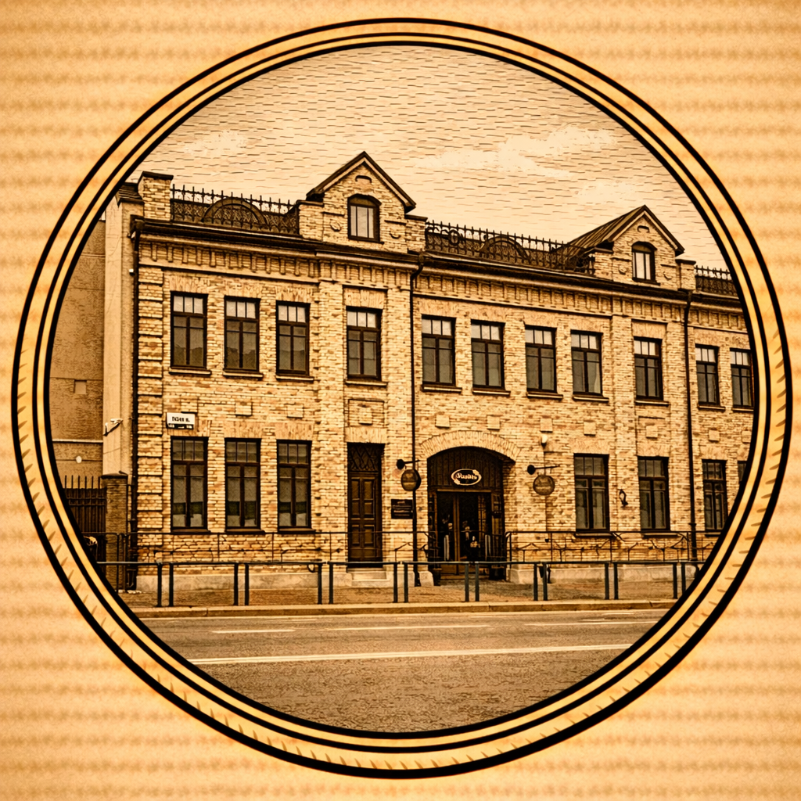
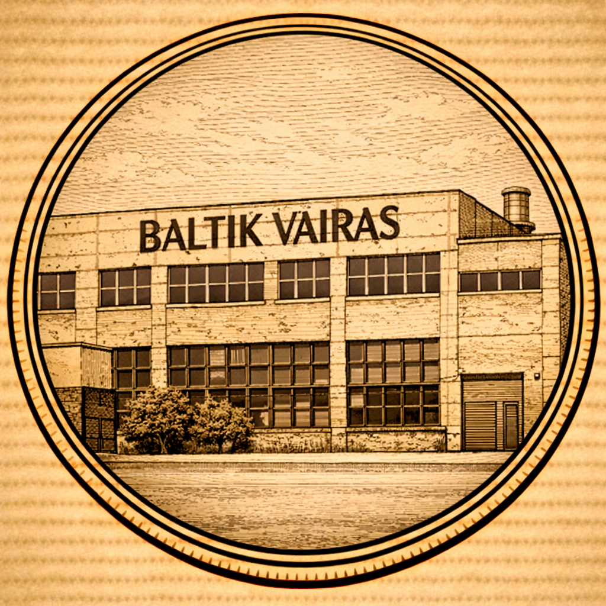
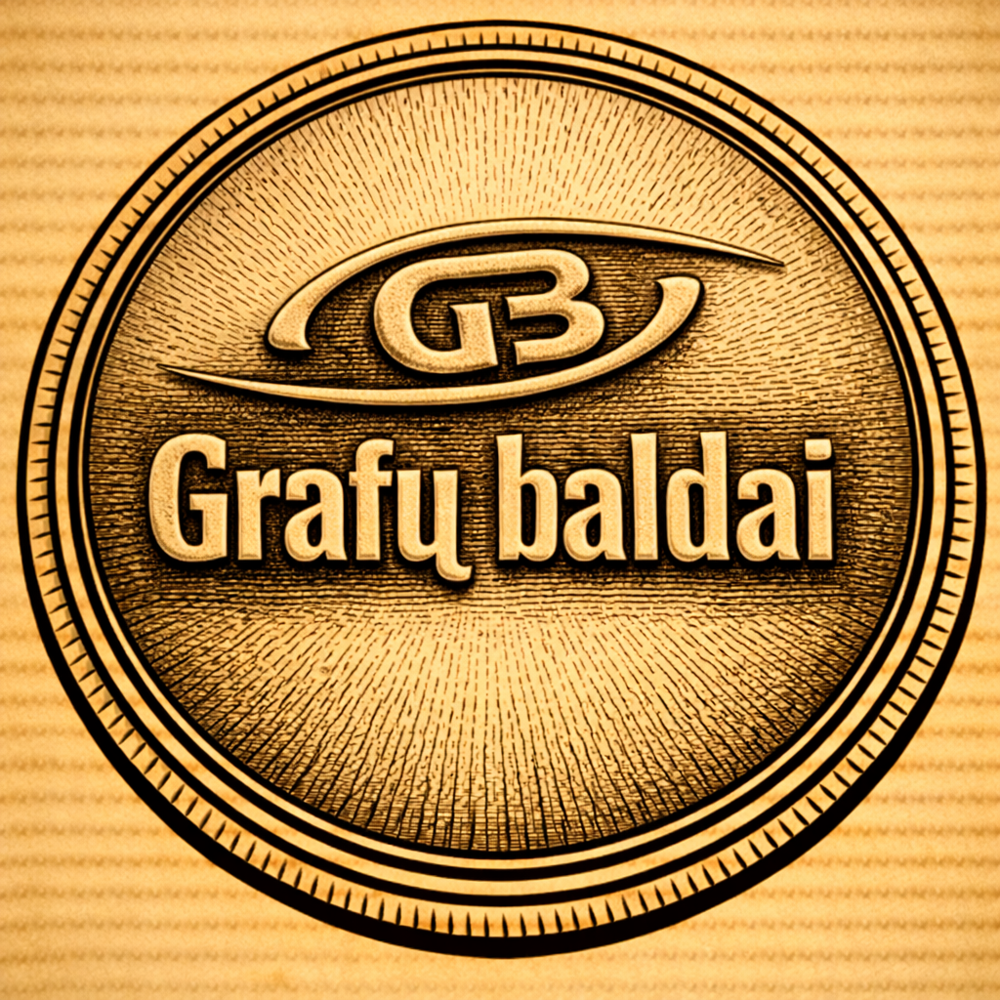
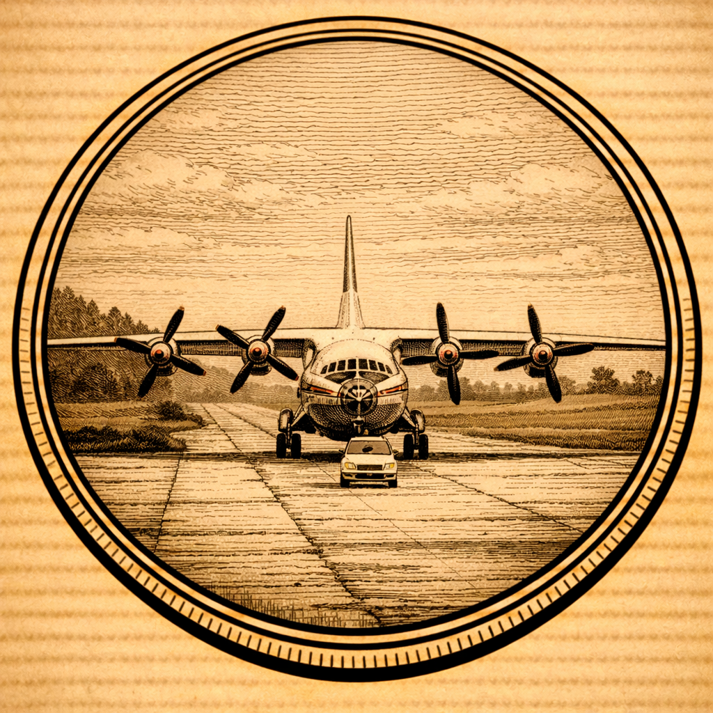
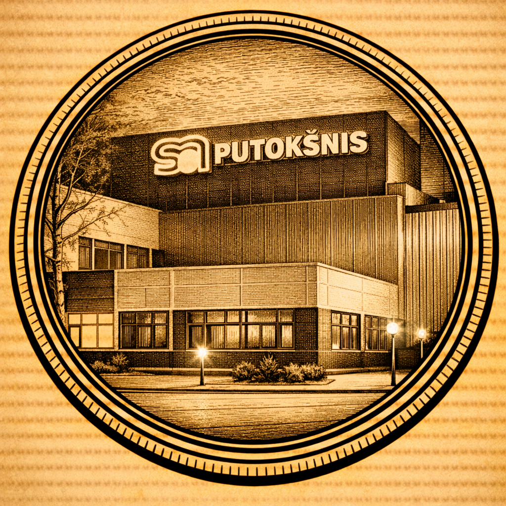
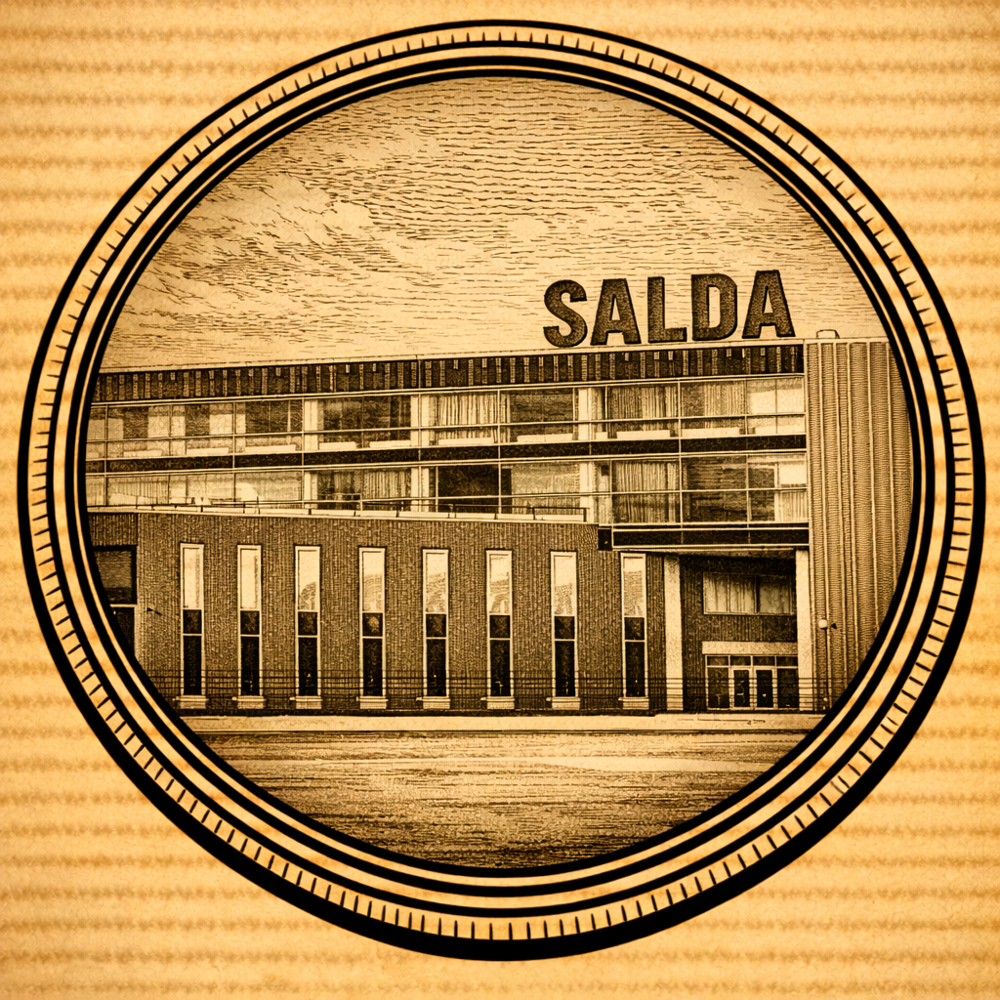

Aplankykite ir pamatykite kas gaminama Šiauliuose
Ne visi jauni žmonės žino tą pramoninę miesto pusę. Reikia plačiau atverti duris tų įmonių, kurios Šiauliuose turi savo vardą, yra stiprios ir kuriančios darbo vietas.
Dažniausiai lankomi objektai

Saldainių fabrikas Rūta

Baltik vairas

Grafų baldai

Šiaulių oro uostas

Doloop (Putokšnis)
